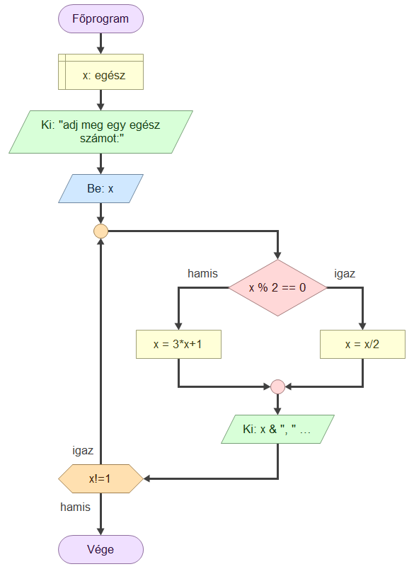
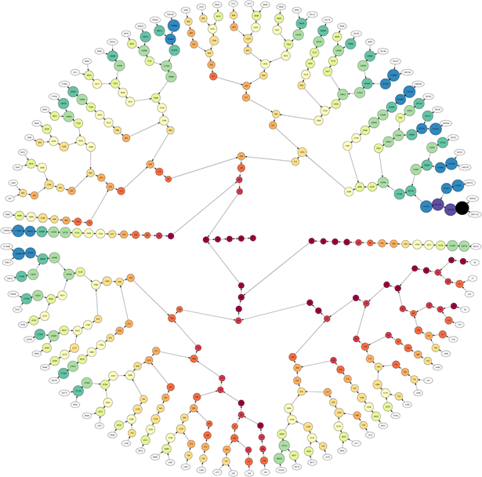

Adj meg egy egész számot:
szám here
A Collatz-sejtés egy máig megoldatlan probléma a matematikában. Több más néven is ismert, például Ulam-sejtés vagy 3n+1 probléma. A sejtés a nevét Lothar Collatzról kapta, aki 1937-ben fogalmazta meg azt. A probléma a következő: Tetszőleges pozitív egész számból kiindulva képezzünk végtelen sorozatot úgy, hogy ha a sorozat utoljára kiszámított eleme páros, akkor a rákövetkező elem ennek fele lesz, különben viszont a háromszorosánál eggyel nagyobb szám. Például ha a 7-ből indulunk ki (amely páratlan), akkor a rákövetkező elem 3 ⋅ 7 + 1 = 22, amely páros, így a következő elem a 22 fele, azaz 11 lesz. Tovább folytatva a szabály alkalmazását a 7, 22, 11, 34, 17, 52, 26, 13, 40, 20, 10, 5, 16, 8, 4, 2, 1, 4, 2, 1, ... sorozatot kapjuk. Látható, hogy innentől a végtelenségig ismétlődik a 4, 2, 1 számhármas. Különböző számokból kiindulva azt tapasztaljuk, hogy újra meg újra olyan sorozatokat kapunk, amelyek a 4, 2, 1 számhármas végtelen ismétlődésébe torkollnak. A Collatz-sejtés azt mondja ki, hogy ez mindig így van: akármilyen pozitív számmal is kezdjük a sorozat képzését, a végén mindig a 4, 2, 1 ciklusba futunk bele. Egyelőre megoldatlan probléma annak eldöntése, hogy a sejtés helyes-e.

